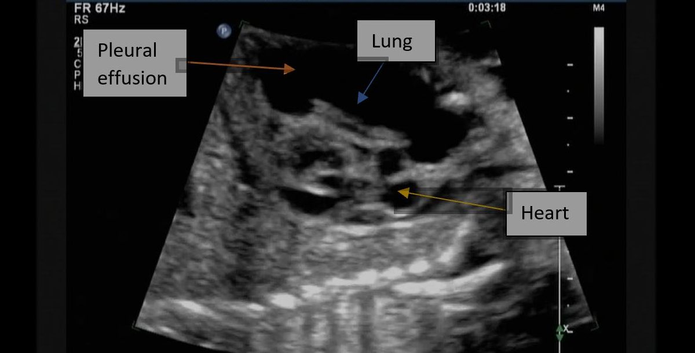

Base pulmonaire : signe de la colonne

123456D
La colonne s'arrête au diaphragme.
Liquide anéchogène et colonne prolongée au-dessus du diaphragme.
Septa et particules. Le pus et le sang peuvent donner cette image.
- 1 Paroi thoracique
- 2 Poumon
- 3 Foie sous le diaphragme
- 4 Diaphragme
- 5 Colonne arrêtée
- 1 Paroi thoracique
- 2 Poumon
- 3 Foie sous le diaphragme
- 4 Diaphragme
- 5 Signe de la colonne
- 6 Épanchement pleural
- 1 Paroi thoracique
- 2 Poumon
- 3 Foie sous le diaphragme
- 4 Diaphragme
- 5 Signe de la colonne
- 6 Cloisons
- 7 Signe du plancton
Où s'arrête la colonne quand il n'y a pas de liquide ?
Sans épanchement, l'air du poumon arrête les ultrasons au diaphragme : la colonne thoracique ne se voit pas au-dessus du diaphragme. Avec un liquide, le faisceau traverse l'épanchement et la colonne continue au-dessus du diaphragme. C'est le signe de la colonne, ou spine sign.
Une étude prospective de trauma (European Journal of Trauma and Emergency Surgery, 2021) a mesuré l'extension de ce signe pour l'hémothorax, contre le scanner : sensibilité 78,7 %, spécificité 92,6 %.7 Le signe affirme surtout l'absence de liquide quand il manque (valeur prédictive négative 97,8 % dans cette série).
Le volume approximatif de Balik, chez le ventilé, est vingt fois la séparation maximale en millimètres. Ce n'est pas une mesure au millilitre près : l'erreur moyenne publiée avoisine 158 ml, et l'hémothorax comme l'empyème étaient exclus de la dérivation.
Schéma pédagogique. Cliché source : Pleural effusion 2, Wikimedia Commons, CC BY-SA 4.0, consulté le 31 octobre 2026. L'en-tête nominatif du fichier d'origine a été recadré avant dépôt. La superposition n'est pas un calque. Repère D à gauche de l'écran.